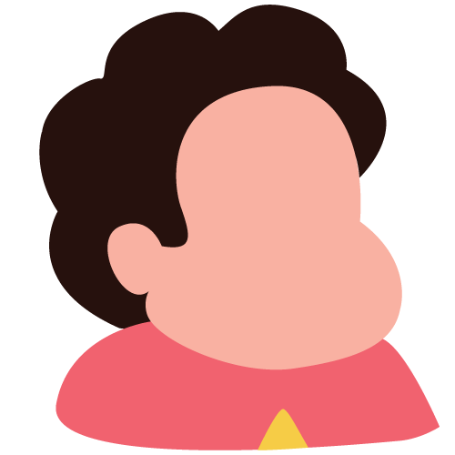
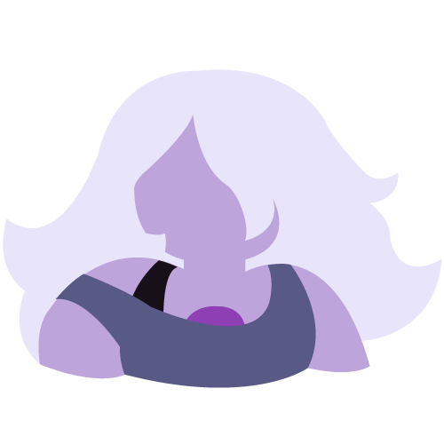
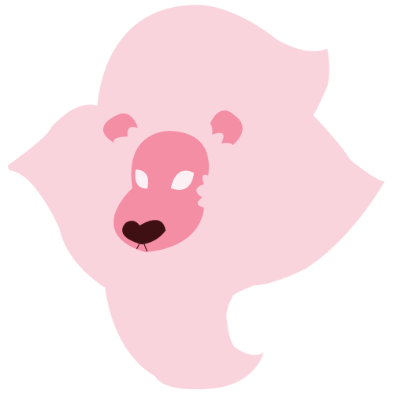

Sobre a animação
Steven Universo (Steven Universe, nome original) é uma série de desenho animado do canal Cartoon Network criada por Rebecca Sugar que estreou em 4 de Novembro de 2013 nos Estados Unidos e em 7 de Abril de 2014 no Brasil. É a primeira animação da história do canal feito por uma Mulher!
Descrição
Em Steven Universe, a Terra é protegida por uma equipe de guardiãs Gems, as Crystal Gems. A fonte de sua magia provém das pedras preciosas presas a seus corpos que conferem habilidades mágicas. A princípio, as Gems integrantes desse grupo são: Garnet, Pérola, Ametista e Steven. Este último é o mais novo delas, uma vez que herdou a pedra de sua mãe, Rose Quartz, no dia de seu nascimento. Enquanto ele tenta descobrir os segredos por trás de sua pedra, Steven passeia por Beach City ou por diferentes mundos com as Gems, seja divertindo-se ou saindo em missões para salvar o mundo de ameaças.
Desenvolvimento
Conceito e criação
Rebecca Sugar sempre teve o sonho de criar um show que misturasse a realidade com a fantasia. Ela se baseia na relação com seu irmão Steven Sugar (que inclusive é inspiração para o protagonista), para desenvolver o desenho. Durante sua fase de crescimento, ela criava vários quadrinhos que incluíam ela mesma e Steven, além de outras personagens.[3] Numa entrevista, Rebecca afirma que seu desejo é basear o protagonista sob o ponto de vista de seu irmão crescendo e recebendo toda a atenção, fazendo com que se sinta confortável com sua vida, mas ao mesmo tempo querendo crescer e não ser mais o caçula.
Em outra entrevista, Rebecca disse que ela e sua equipe gostariam de criar um desenho animado que faltam em suas infâncias. Ela quer incentivar as crianças dos dias atuais a serem elas mesmas, sem que se preocupem em se encaixar em uma sociedade. Devido a isso, a série explora constantemente temas mais inclusivos, como a homossexualidade e identidade.
Produção
De acordo com Rebecca, a produção de Steven Universo se iniciou enquanto trabalhava com outros escritores de Hora de Aventura. Seu último episódio para a série foi "Simon e Marcy", em que trabalhar em duas séries simultaneamente chegou ao ponto no qual "se torna impossível para realizar". Ela encontraria essa dificuldade apenas durante a produção do episódio "Fionna e Cake".
Música
As canções são compostas por Rebecca Sugar em colaboração com seus escritores e são adicionadas durante a produção de um episódio em que há a necessidade de passar um sentimento ou uma ideia sem que o personagem simplesmente fale seus pensamentos, mas que expresse com detalhes, seguido de melodia e letras. De acordo com Rebecca, todas exercem uma função dentro do programa e muitas delas têm entre cinco ou seis versões descartadas até se chegar ao produto final, enquanto outras são bem mais fáceis de se fazer e saem na primeira tentativa.
